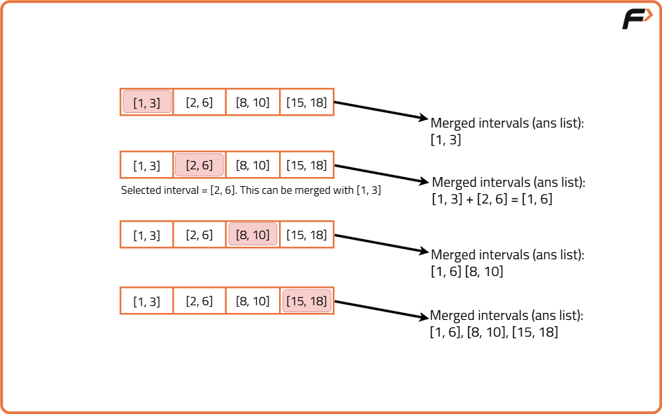

Merge Overlapping Sub-intervals
Problem Statement: Given an array of intervals where intervals[i] = [starti, endi], merge all overlapping intervals and return an array of the non-overlapping intervals that cover all the intervals in the input.
Examples
Input : intervals=[[1,3],[2,6],[8,10],[15,18]] Output : [[1,6],[8,10],[15,18]] Explanation : Since intervals [1,3] and [2,6] are overlapping we can merge them to form [1,6] intervals. Input : [[1,4],[4,5]] Output : [[1,5]] Explanation : Since intervals [1,4] and [4,5] are overlapping we can merge them to form [1,5].
Disclaimer: Here is the practice link to help you assess your knowledge better. It's highly recommend trying to solve it before looking at the solution.
Brute-Force Approach
Algorithm
The main idea is to combine intervals that overlap with each other. To do this easily, we first sort the intervals by their starting point so that all overlapping intervals come next to each other. Then, for each interval, we try to see if the next ones overlap with it. If they do, we merge them into one bigger interval. We keep doing this until we find a non-overlapping interval, and then start the process again from that point.
- Sort all intervals based on their starting points. This helps bring all overlapping intervals next to each other.
- Go through each interval one by one and if the current interval is already covered by a previously merged interval, skip it. Else, pick the current interval as the starting point of a new merged interval.
- Now run another loop to check if the following intervals overlap with the current one
- If the start of next interval is less than or equal to the end of the current merged interval, it means they overlap. Therefore, extend the end of the merged interval to be the maximum of the two ends.
- Keep doing this for the next intervals as long as they overlap. As soon as you find an interval that doesn't overlap, break the inner loop and move back to the outer loop to process the next non-overlapping interval.
- Store each merged interval in the final answer list and after the loop ends, return the list of merged intervals.
Code
#include <bits/stdc++.h>
using namespace std;
class Solution {
public:
// Function to merge overlapping intervals using brute force
vector<vector<int>> merge(vector<vector<int>>& intervals) {
// Sort intervals based on start time
sort(intervals.begin(), intervals.end());
// Result array to store merged intervals
vector<vector<int>> ans;
// Loop through each interval
int n = intervals.size();
for (int i = 0; i < n; ) {
// Start of current merged interval
int start = intervals[i][0];
int end = intervals[i][1];
// Merge with all overlapping intervals
int j = i + 1;
while (j < n && intervals[j][0] <= end) {
// Update end to the maximum of current end and overlapping interval's end
end = max(end, intervals[j][1]);
j++;
}
// Add the merged interval to result
ans.push_back({start, end});
// Move to the next non-overlapping interval
i = j;
}
return ans;
}
};
int main() {
Solution sol;
vector<vector<int>> intervals = {{1,3}, {2,6}, {8,10}, {15,18}};
vector<vector<int>> result = sol.merge(intervals);
for (auto interval : result) {
cout << "[" << interval[0] << "," << interval[1] << "] ";
}
return 0;
}
Complexity Analysis
Time Complexity: O(N^2), for every interval we check all future intervals.Space Complexity: ON), additonal space used to store the non-overlapping intervals.
Optimal Approach
Algorithm
Imagine laying intervals out on a number line. If two intervals overlap, we can combine them into one, like merging blocks that touch or overlap.
Instead of checking each interval with every other one (as in brute-force), we first sort the intervals, so that any overlapping intervals will come one after the other. This way, we only need to compare each interval with the last one added to our answer. If they overlap, we merge them. If they don’t, we simply add the current interval as a new entry.
Instead of checking each interval with every other one (as in brute-force), we first sort the intervals, so that any overlapping intervals will come one after the other. This way, we only need to compare each interval with the last one added to our answer. If they overlap, we merge them. If they don’t, we simply add the current interval as a new entry.
- Sort the intervals based on their starting points. This ensures overlapping intervals come together.
- Initialize an empty list to store the final merged intervals.
- If the list is empty or the current interval starts after the last one ends, it means there is no overlap, so just add it to the list.
- If the current interval starts before or exactly at the end of the last one, it means there is overlap. So, combine both by extending the end of the last one to the further end of the two.
- Keep doing this until all intervals have been checked. The final list will now contain only non-overlapping, merged intervals.

Code
#include <bits/stdc++.h>
using namespace std;
class Solution {
public:
// Function to merge overlapping intervals
vector<vector<int>> merge(vector<vector<int>>& intervals) {
// Sort intervals based on starting time
sort(intervals.begin(), intervals.end());
// Vector to store final merged intervals
vector<vector<int>> merged;
// Traverse each interval
for (auto interval : intervals) {
// If merged is empty or current interval does not overlap
if (merged.empty() || merged.back()[1] < interval[0]) {
// Add current interval as a new non-overlapping block
merged.push_back(interval);
} else {
// Overlapping: merge by extending the end time
merged.back()[1] = max(
merged.back()[1],
interval[1]
);
}
}
return merged;
}
};
int main() {
Solution sol;
vector<vector<int>> intervals = {
{1, 3}, {2, 6}, {8, 10}, {15, 18}
};
vector<vector<int>> result = sol.merge(intervals);
for (auto v : result) {
cout << "[" << v[0] << "," << v[1] << "] ";
}
return 0;
}
Complexity Analysis
Time Complexity: O(N*logN) + O(N), we sort the entire array and then merge them in a single pass.Space Complexity: ON), additonal space used to store the non-overlapping intervals.